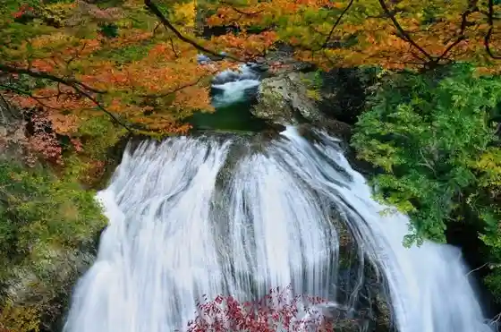
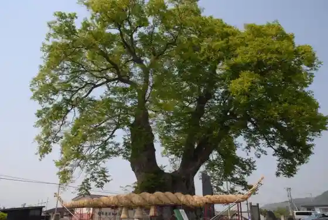

Sekiyama Otaki
Higashine, Yamagata · 0237-41-1200 · Official / source link

Sakurambo Higashine Eki
Higashine, Yamagata · 050-2016-1600 · Official / source link

Yamagata Airport
Higashine, Yamagata · 0237-48-1313 · Official / source link
Higashine no Oga Yaki
Higashine, Yamagata · 0237-42-1111 · Official / source link

Sakurambo Higashine Onsen
Higashine, Yamagata · 0237-42-7100 · Official / source link
(Ari) Bunshiro Fu
Higashine, Yamagata · 0237-42-0117 · Official / source link
JA Sakurambohigashine Famazumagatto Yotteke Popora
Higashine, Yamagata · 0237-41-0288 · Official / source link
Higashineasobia Land
Higashine, Yamagata · 0237-43-5551 · Official / source link
Higashi no Mori
Higashine, Yamagata · 0237-48-7211 · Official / source link
Funagata Renpo (Gosho Yama)
Higashine, Yamagata · 0237-42-1111 · Official / source link
Omori Yama / Magai Hotoke
Higashine, Yamagata · 0237-42-1111 · Official / source link
Maria Kannon
Higashine, Yamagata · 0237-42-1111 · Official / source link
Kuro Fuku Kogen Su no Park Jangurujanguru
Higashine, Yamagata · 0237-41-5555 · Official / source link
Do no Mae Park
Higashine, Yamagata · 0237-42-1111 · Official / source link
So Kan Taki
Higashine, Yamagata · Official / source link
Hisashi Ya Hisashi Kaori Kura
Higashine, Yamagata · 0237-42-0173 · Official / source link
Takiguchi Kanko Orchard
Higashine, Yamagata · 0237-44-2881 · Official / source link
Kaju no Mogitori Experience / Higashine
Higashine, Yamagata · 0237-41-1200 · Official / source link
Higashine Yama Shu Ju In (Soto Shu) / Saijo Sanju San Kannon Dai 19 Ban Kurotori Kannon
Higashine, Yamagata · Official / source link
Rekupia Shirozu
Higashine, Yamagata · 0237-42-1111 · Official / source link
Kurotaki (Betsumei : Jiro Zaemon Taki)
Higashine, Yamagata · Official / source link
Bunshiro Fu Fu Ryori Tokoro " Kiyoshi Kyo "
Higashine, Yamagata · 0237-42-0117 · Official / source link
KK Roku Kasen
Higashine, Yamagata · 0237-42-2777 · Official / source link
(Maruhachi) Ko Kaen
Higashine, Yamagata · 0237-47-1357 · Official / source link
Gassan Chobo Line
Higashine, Yamagata · 0237-42-1111 · Official / source link
Kyodoryori Umegaeda Shimizu
Higashine, Yamagata · 0237-42-0589 · Official / source link
Yugengaisha Satonishiki
Higashine, Yamagata · 0237-42-0894 · Official / source link
Wakagi Yama
Higashine, Yamagata · 0237-42-1111 · Official / source link
Oyamada Marusan Orchard
Higashine, Yamagata · 0237-42-3248 · Official / source link
Kami Town Kanko Orchard
Higashine, Yamagata · 0237-48-1888 · Official / source link
Takiguchi Orchard
Higashine, Yamagata · 0237-44-1957 · Official / source link
(Maruki) Maki Orchard
Higashine, Yamagata · 0237-47-2722 · Official / source link
Kuro Fuku Yama
Higashine, Yamagata · 0237-42-1111 · Official / source link
Hanyu Chiku no Ibaratomiyo Seisokuchi
Higashine, Yamagata · 0237-42-1111 · Official / source link
Koji Ro Inari Shrine no Ishidorii
Higashine, Yamagata · 0237-42-1111 · Official / source link
Warachi Yan no Orchard
Higashine, Yamagata · 0237-44-2062 · Official / source link
(Marusen) Kikuchi Farm
Higashine, Yamagata · 0237-47-0507 · Official / source link
Hi Taki
Higashine, Yamagata · Official / source link
SAITO FARM
Higashine, Yamagata · 0237-43-2146 · Official / source link
Bunshiro Fu - Sogyo Bunkyu Nenkan
Higashine, Yamagata · 0237-42-0117 · Official / source link
(Yamato) Mogitori Sono
Higashine, Yamagata · 090-7522-2185 · Official / source link
Kami Town Ringo Kenkyusho
Higashine, Yamagata · 0237-47-0003 · Official / source link
Sakurambo Sono MAETA
Higashine, Yamagata · 0237-43-2810 · Official / source link
Shirozu Kawa Teibo Sakura Namiki
Higashine, Yamagata · 0237-42-1111 · Official / source link
Fuko Tera no Kane
Higashine, Yamagata · 0237-42-1111 · Official / source link
Komatsu Baths
Higashine, Yamagata · 023-742-1551 · Official / source link
Ichi Ai Farm
Higashine, Yamagata · 0237-47-1949 · Official / source link
Ishiyama Seika
Higashine, Yamagata · 0237-47-3064 · Official / source link
Nonoka Hongo Kan
Higashine, Yamagata · 0237-42-1711 · Official / source link
Abe Orchard
Higashine, Yamagata · 0237-47-1827 · Official / source link
Yamaguchi Sakurambo Sono
Higashine, Yamagata · 080-1800-4021 · Official / source link
Honma Orchard
Higashine, Yamagata · 0237-44-2858 · Official / source link
Kohii Ya
Higashine, Yamagata · 0237-43-0658 · Official / source link
Gosho Yama Prefectural Nature Park
Higashine, Yamagata · 023-630-3084 · Official / source link
Suitchikohii NEUTRAL
Higashine, Yamagata · 080-8061-0228 · Official / source link
Ota Yu
Higashine, Yamagata · 023-743-6788 · Official / source link